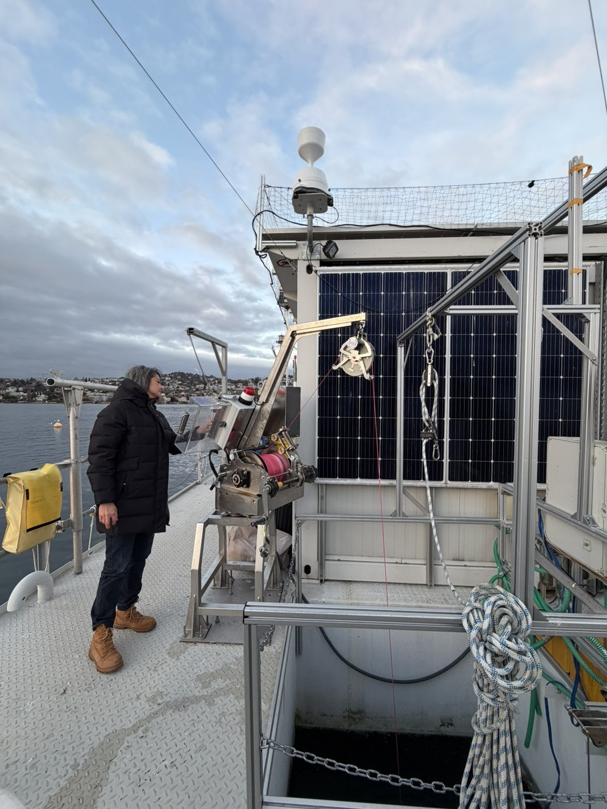
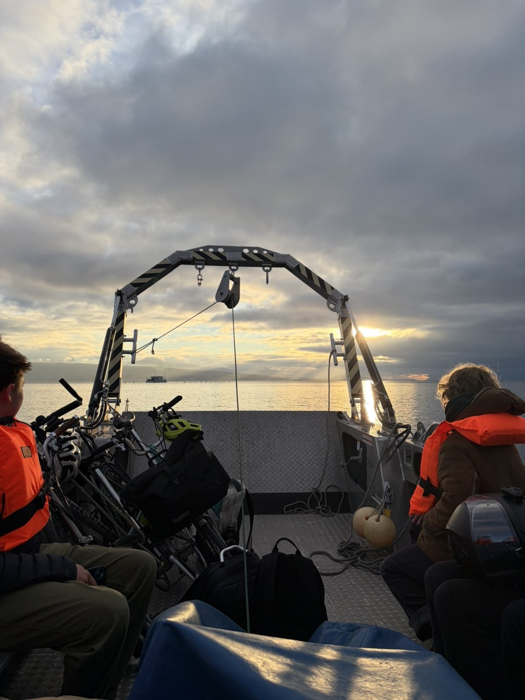
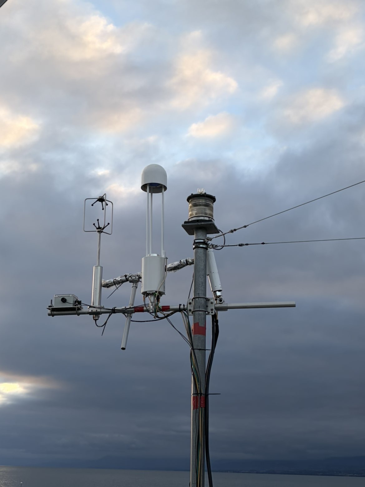
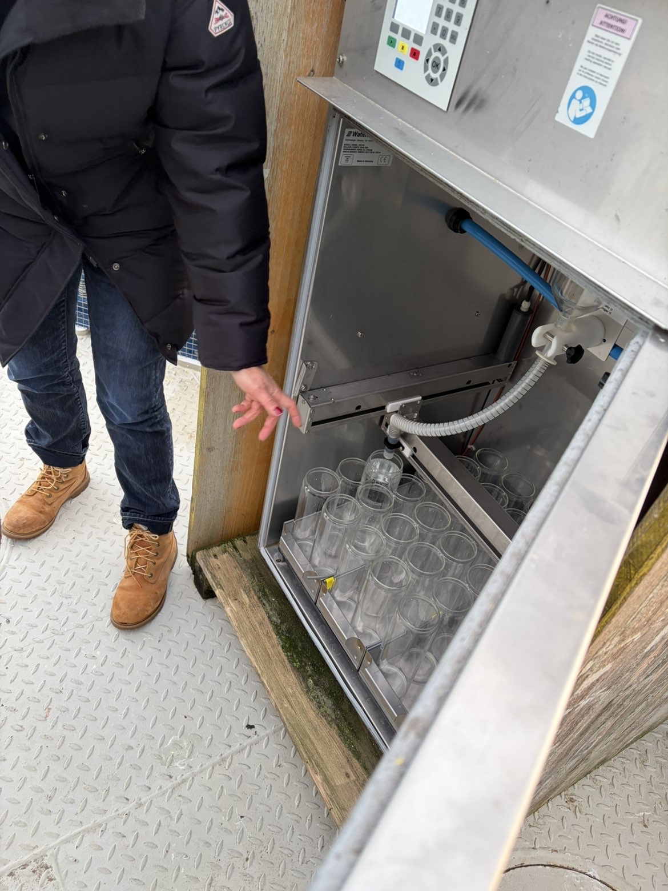
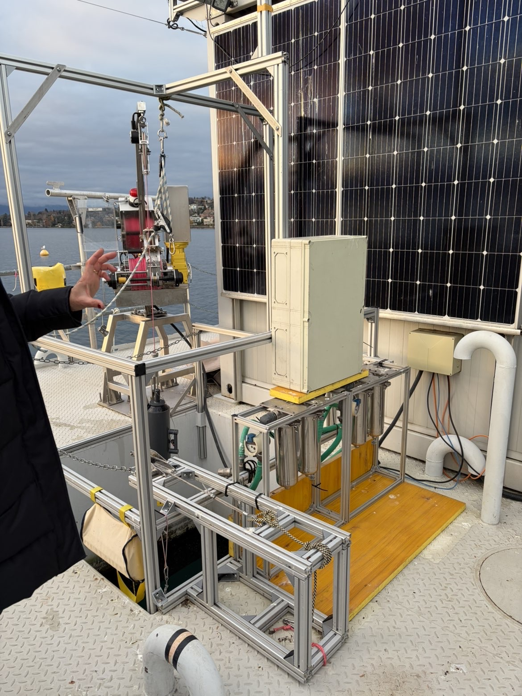
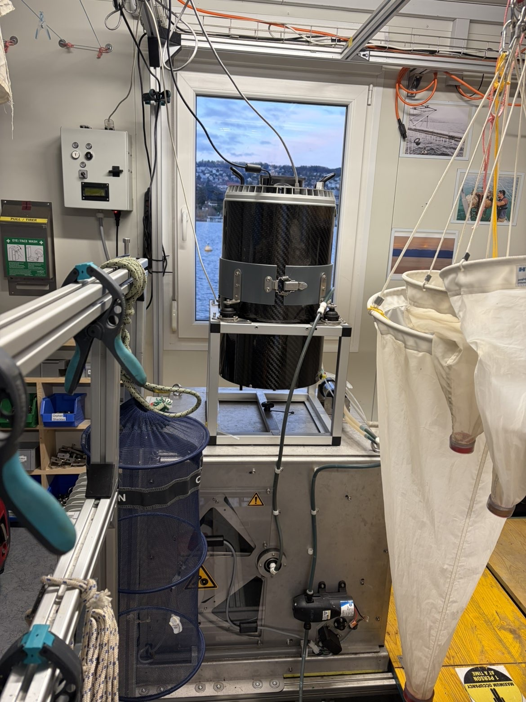
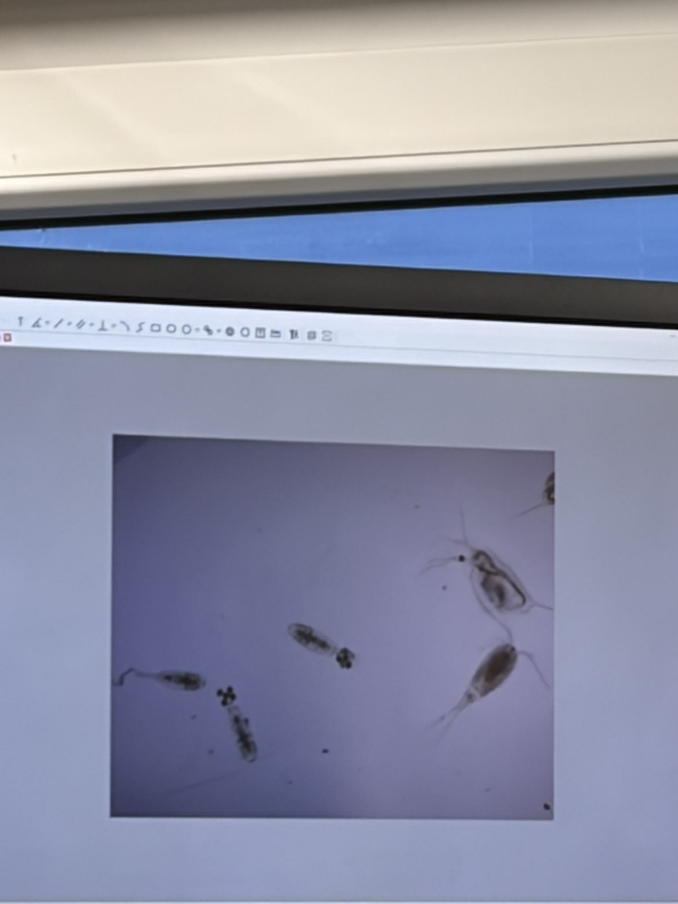

Article publié le 21.10.2026 à 13h50 / Rédigé par Roman Wagnon & Zoé Borel
Contexte
Au large du port de Pully, à environ 600 mètres du bord, flotte une plateforme-container de 100 mètres carrés. Dispositif unique de monitoring et de prélèvement de données scientifiques sur le Léman, la sujette du présent article – la plateforme LéXPLORE – n’aurait selon certain.es rien à envier à la Station Spatiale Internationale. Pour vous, nous l’avons visitée le temps d’un après-midi.

Image prise depuis le pont de la plateforme
Avant 2019, le Léman figurait déjà parmi les lacs les plus
suivis de Suisse. Cependant, les mesures étaient limitées. L’arrivée de la plateforme en 2019 fut la réponse à un besoin d’étudier des processus biologiques, chimiques et physiques à partir de données jusqu’ici peu ou pas perceptibles. Avec la particularité d’analyser et de prélever en continu le lac, la plateforme n’est toutefois pas vouée à en donner le bilan de santé. Elle est un censeur technologique de pointe permettant une combinaison de recherches, analyses et prélèvements. Elle accueille en ce sens une trentaine de projets temporaires, articulant une collaboration multipolaire entre les universités de Lausanne et Genève, l’EPFL, l’Institut Fédéral des Sciences et Technologiques de L’eau (Eawag), le Centre Alpin de Recherche sur les Réseaux Trophiques des Écosystèmes Limniques (CARRTEL) ainsi que de très nombreux autres partenaires scientifiques et académiques internationaux.

L'accès à la plateforme de L'éXPLORE se fait en bateau
En termes de position, la plateforme dépend de critères simples. Elle se situe hors des lignes de navigation CGN et des zones dédiées à la pêche, proche des instituts universitaires et de la rive droite du lac. Aussi, éloignée de l’embouchure du Rhône et de la sortie de la conduite de la station d’épuration de Vidy, la plateforme ne prétend pas représenter tout le lac. Elle quantifie des processus à un endroit donné et permet d’en dériver les observations en équations, puis en modèles par généralisation.
Ce qu'elle étudie, et comment ?
L’éXPLORE est unique en son genre. On peut la diviser en trois espaces :
Le Périmètre
Les bouées extérieures délimitent un périmètre, qui permet d’exclure la navigation. Puis, à l’intérieur, des bouées de mouillages supportent différents capteurs. Ces derniers permettent aux chercheurs d’interpréter les variables classiques comme la conductivité, la température ou le pH. Sur certaines de ces bouées, un relai est établi avec les serveurs et permet une analyse en direct par les instituts.Aussi, des drones automatisés, qui descendent et remontent deux à trois fois par jour au sein du périmètre, établissant ainsi des profils sur des propriétés optiques. Des dispositifs en phase de test sont également régulièrement installés dans le périmètre de la plateforme, pour ensuite être exploités dans d’autres environnements, en montagne notamment.
Grâce à ses capteurs de pointe, la plateforme est une véritable station météorologique lacustre unique en son genre. Dans un pays où le climat régional est particulièrement influencé par les lacs, les données recueillies confrontent les données météo aux modèles.
Il y a deux techniciens qui travaillent quotidiennement sur le sujet de la plateforme. Ils sortent régulièrement les capteurs de l’eau, les recalibrent et déchargent les données. Ce travail indispensable permet un pont entre la captation purement technologique des données et leur interprétation scientifique.
L'extérieur
Mesures de Turbulence, Frigos et systèmes de pompages uniques au monde:
Mesurer les turbulences dans l’air représente un paramètre crucial pour la compréhension précise des échanges de gaz entre le lac et l’atmosphère. Afin de parvenir à mesurer les turbulences sur un milieu hautement dynamique, la plateforme a été stabilisée au maximum au moyen de câbles et de treuils.

Mât météorologique doté de capteurs météo et environnementaux installé sur L'éXPLORE
Cependant, les capteurs ne nous donnent pas tout : Dans la plupart des cas les scientifiques auront besoin de faire des prélèvements. Des systèmes de pompages automatisés ont été installés, allouant ainsi flexibilité et indépendance aux recherches.
Exemples de pompes...

Pompe à nutriments équipée d'un réfrigérateur
• Pompe à nutriments
Les nutriments essentiels à la croissance des plantes, comme le phosphore et l’azote, sont présents en très faibles concentrations dans l’eau du Léman. Comme les seuils de détection recherchés sont très bas, un échantillonnage précis avec intervention humaine est nécessaire. Le dispositif consiste en un réfrigérateur muni d’une pompe qui prélève de l’eau à intervalles réguliers. L’eau pompée remplit des bouteilles qui sont ensuite conservées au froid afin de préserver les échantillons jusqu’à leur analyse.
• Pompe à microplastiques
Des pics de charriage de particules de pneus principalement, sont observés lors des tempêtes. Puisque personne ne se trouve sur la plateforme lors de tels évènements, on aurait donc des mesures qui tomberaient dans les « creux » de pollution. Palliant ce problème, la plateforme innove grâce à un dispositif de captage composé de deux tuyaux intégrés. Un premier à 6m et un deuxième à 10m prélèvent ainsi deux fois par jour à la même heure.
Ce dispositif illustre le travail hautement spécifique des acteurs de LéXPLORE. Au bout d’un mois, les scientifiques récupèrent les cartouches alimentées par les pompes. Les particules y sont retenues par une mousse, avant d’être extraites en laboratoire et analysées au travers de microscopes à rayons infrarouges. Cette mesure de microplastiques continues est l’une des seules au monde.
Méthodes de télédétection, treuil et instruments de prélèvement
De nuit, des drones pilotés par des technicien.nes et équipés de rayonnement LIDAR vert, identifient les nuages de zooplancton incolores grâce à des mesures de télédétection. Ces dernières se basent sur la diffraction du rayonnement émis en retour par le zooplancton.

Pompe à microplastiques (premier plan) et treuil (second plan)
Treuil à zooplancton équipé d'une maille de 200 microns, remontée adaptée à une vitesse qui l’empêche de s’échapper mais qui le maintien dedans.
Intérieur de la plateforme et modélisation
On retrouve à l’intérieur de la cabine le matériel technique, les ordinateurs et les appareils d’analyse typiques d’un mini-laboratoire. Par exemple, le cytomètre en flux, pompe l’eau du lac et la fait passer dans un capillaire si fin qu’il a pour effet de séparer les cellules une à une et de les présenter devant un laser. La machine est un compteur d’algues, qui permet de les identifier en grandes famille.
Les données
Elles sont transmises en direct, déposées sur un serveur et transmis à DATALEX, un site ouvert à tous qui permet de les visualiser.
Screenshot du site: datalakes-eawag.ch
Impact de la tempête Benjamin le 24 octobre 2025, qui a eu pour effet de perturber la thermocline. L'eau chaude a plongé, l'eau froide est remontée.

Instruments à l'intérieur de la cabine de L'éXPLORE
Processus sur L'éXPLORE:
Les premières dizaines de mètres du lac constituent la zone photique. C’est la partie verticale de la colonne d’eau pénétrable par la lumière dans laquelle les producteurs primaires – algues vertes et diatomées – croissent par photosynthèse. Ces végétaux lacustres fondent la nourriture de base pour les consommateurs primaires en suspension dans l’eau (bactéries, microbes et plancton animal), regroupés sous le nom de zooplancton. Seulement, à l’interface entre le domaine végétal et les consommateurs secondaires comme les poissons, le zooplancton est dépendant des courants et contraint à un compromis fragile. En effet, le jour, alors que les poissons peuvent le voir et le consommer, le zooplancton reste dans l’obscurité froide du lac, plus profondément et éloigné de la zone photique d’où il tire ses ressources. Quotidiennement, ce dernier, moyennant une dépense conséquente d’énergie, remonte en banc vers la surface durant la nuit et profite d’une invisibilité momentanée pour se nourrir.

Les échantillons peuvent être analysés directement sur L'éXPLORE à l'aide de microscopes, plusieurs espéces sont visibles sur le cliché telles que daphnies et copépodes
Comprenant le mode de vie nocturne du zooplancton, l’installation de la plateforme revêt un sens tout particulier. En effet, si les anciennes mesures étaient réalisées de jour et toujours au même endroit du lac, elles ne reflétaient qu’une partie de la réalité. LéXPLORE vient en cela répondre à cette incertitude en fournissant des données lors des périodes nocturnes d’activité et tient compte du déplacement en bancs du zooplancton. Les prélèvements combinés aux méthodes de télédétection sont réalisés de nuit.
Le saviez-vous ?
Alors que la vision d’un Léman au bilan carbone annuel neutre prédominait, la plateforme a permis de démontrer que ce dernier était un réel émetteur de gaz carbonique En réaction, analogiquement à ce qu’il se produit dans une bouilloire, l’augmentation de la température en été et la forte activité des algues accroît le taux de pH. Dans de telles conditions, se produit une précipitation de calcaire. Cette réaction libère du dioxyde de carbone. Sans les recherches des acteurs de L’éXPLORE, nous n’aurions pas pu le prouver. En proportion, la quantité de CO2 émise par le Léman sur un an est comparable aux émissions du transport automobile annuel de Lausanne.